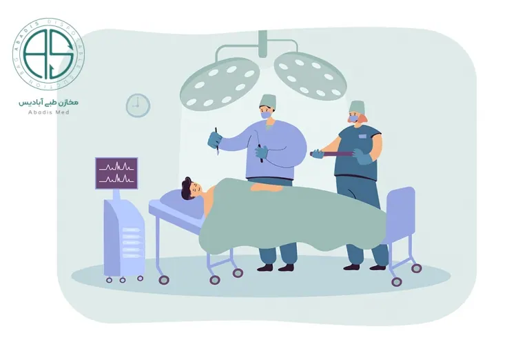

عفونتهای بیمارستانی انواع متفاوتی دارند که از مهم ترین آنها می توان به موارد زیر اشاره نمود:
- عفونت زخم عمل جراحی
- عفونت خون یا سپسیس
- عفونت های ادراری
عفونت زخم جراحی
به عنوان یکی از عفونت های بیمارستانی، ناشی از عفونت باکتری می باشد. این آلودگی عموما در حین جراحی و یا پس از آن ایجاد مشکل می کند. این مشکلات شامل، آسیب در عضو، عفونت در خون، نقص در فرایند محل جراحی و حتی مرگ فرد، می شود.
به طور معمول عوارض شایع در این عفونت ۵ تا ۱۰ روز پس از جراحی بروز می کند، ولی در برخی از موارد این علائم می تواند بعد از چند هفته نیز بروز کند. از مهم ترین این علائم می توان به چرک و تجمع سایر مایعات در اطراف بخیهها، درد و قرمزی اطراف زخم جراحی و در برخی از موارد
تب نیز، اشاره نمود. بروز این علائم دلایلی دارد. این دلایل عمدتا ناشی از برخی از باکتری ها شامل استرپتوکوکها، استافیلوکوکها یا سایر میکروبها می شود.
بروز و خطر این میکروب ها بسیار زیاد است؛ به طوری که علیرغم انجام روشهای ضدعفونیکننده جدید قبل از عمل جراحی و مراقبتهای سطح بالای پس از عمل، این عفونت ها همچنان فرصت بروز را پیدا می کنند.
برخی از موارد زمینه ای در بدن و ویژگی بیماران، می تواند افراد را در معرض بیشتر این عفونت قرار دهد. برای مثال افراد مسن بیشتر از جوانان دچار این نوع عفونت می شوند. تغذیه ناکافی و ناصحیح، هر گونه بیماری مزمن به ویژه دیابت، استفاده از داروهای سرکوبگر دستگاه ایمنی، جراحی
دستگاه گوارش، چاقی بیش از حد افراد و ابتلا به بیماری صرع، می تواند احتمال ابتلا به عفونت های این چنینی در بیمارستان را افزایش دهد.
برای پیشگری از ابتلا به این عفونت، راه های زیر در نظر گرفته می شود:
- تجویز آنتیبیوتیک قبل از عمل جراحی در زمان مناسب
• اطمینان از انتخاب بهترین وضعیت ممکن قبل از جراحی، برای بیمار
• استفاده از محلولهای ضدمیکروبی در اطراف برش جراحی
• استفاده از آنتیبیوتیکهای خاص مثل نئومایسین پیش از جراحی در دستگاه گوارش برای استریل کردن لوله گوارشی
• رعایت نکات استریل مانند از بین بردن هر نوع باکتری یا سایر میکروارگانیسمها، مثل ویروسها یا انگلها، در اطراف محل جراحی و همچنین ابزار آلات اتاق عمل
• استفاده کارکنان اتاق عمل از لباس، کلاه و ماسک تمیز و استریل
• کاهش استفاده از بخیه ( استفاده از بخیه، تنها در موارد بسیار ضروری)
• پاک کردن پوست قبل از جراحی از هر گونه آلودگی
• انتخاب آنتیبیوتیک مناسب برای زمان بعد از عمل
• برنامه ریزی صحیح برای زمان و طول دوره مصرف آنتیبیوتیک در دوز مناسب
• کوتاهکردن موها (به جای تراشیدن) اطراف محل برش جراحی
• تنظیم سطح قندخون در سطح مناسب در افراد دیابتی. (افراد دیابتی که جراحی قلب دارند، نیاز به نگهداری و دقت بیشتری دارند)
• تنظیم و حفظ دمای بدن در حد طبیعی در بیمارانی که جراحی روده بزرگ دارند.
بسیاری از موارد علی رغم نگهداری و رعایت اصول بهداشتی، افراد دچار این نوع عفونت می شوند. به همین منظور روش های درمانی، نیز در نظر گرفته می شود. در بسیاری از موارد، برای این که مقاومت باکتری و همچنین میزان عفونت مشخص شود، نیاز به کشت در محل آلوده می باشد.
در بیشتر این موارد، باکتری به درمانهای آنتیبیوتیکی معمول پاسخ نمیدهد. در موارد ساده تر، درمان خوراکی آنتی بیوتیک نیز موثر می باشد. در موارد جدی تر بروز عفونت، تجویز آنتیبیوتیک از طریق وریدی صورت می گیرد. در بیمارنی که از پروتز استفاده می کنند و دچار عفونت شدید شده اند، خارج کردن
پروتز در دستور کار قرار می گیرد. برای خارج کردن چرک، آبسه (تجمع مایع عفونی) و یا هماتوم (تجمع خون و لخته خونی که میتواند عفونی شود)، لازم است محل برش جراحی، دوباره باز شود. در کنار بسیاری از درمان ها نیاز به مراقبت های حمایتی مانند برخی مایعات و داروها برای کاهش تب، و همچنین
داروهای مسکن نیز، می باشد. بستری شدن در بخش مراقبتهای ویژه (ICU) جهت درمان نیز در برخی از موارد به شدت توصیه می گردد. به طور کلی استفاده از کیسه گرم یا کمپرس گرم، تعویض لباس ها در صورت بروز ترشحات از زخم نیز، از ضروریات درمان به شمار می آید.
عفونت خون یا سپسیس (sepsis)
این عفونت می تواند باعث بروز شوک در افراد گردد. در عفونت خون یا سپسیس، وضعیت بدن بسیار بغرنج می باشد؛ چرا که عفونت از طریق خون در تمام بدن، منتشر می شود. در هنگام بروز این عفونت، مواد مغذی و اکسیژن، به خوبی به اندام های حیاتی نمی رسند. این امر به دلیل وجود لخته خون و کاهش
جریان خون، ایحاد می شود. در موارد پیشرفته، مرگ چند اندام نیز، از نتیجه این عفونت بروز می کند. در شرایط بسیار وخیم، عفونت خون، موجب افت سریع فشار خون می شود. این امر خود منجر به بروز شوک عفونی می گردد. شوک عفونی بسیار خطرناک است و آثار زیان باری مانند نارسایی ریه ها، کلیه ها، کبد
و در نهایت مرگ، به وجود می آورد. باید در نظر داشت که، عفونت خون در اثر واکنش سیستم دفاعی بدن در مقابل عوامل عفونی از قبیل باکتری، ویروس و یا قارچ نیز به وجود می آید.
برخی از افراد به دلایل زمینه ای بیشتر در معرض ابتلا به این عفونت قرار می گیرند. به طور کلی افرادی که دجار ضعف ایمنی شدید هستند، بیشتر در معرض ابتلا به عفونت خونی قرار می گیرند. ضعیف شدن سیستم ایمنی می تواند در اثر برخی از بیماری ها مانند دیابت و ایدز، و یا حتی برخی از داروها مانند داروهای
شیمی درمانی و یا استروئیدها، به وجود آید. بیماران سرطانی به دلیل استفاده از داروهای قوی و همچنین افرادی که سابقه پیوند عضو داشته اند نیز، در صف اول ابتلا به این عفونت قرار دارند. نوزادان و کودکان نیز با توجه به عدم تکامل سیستم ایمنی بدنشان، در معرض خطر می باشند. افراد مسن و مبتلایان به بیماری
دیابت نیز، در گرئه افراد پرخطر قرار می گیرند. به طور کلی افرادی که در بیمارستان بستری شده اند و مواجهه با تزریق وریدی، زخم های جراحی و یا زخم های بستر داشته اند، باید بیشتر از دیگران به مساله عفونت خونی توجه کنند.
علل عفونت خون
عامل اصلی در این بیماری میکروب ها هستند. این در حالی است که در برخی از موارد باکتری ها، ویروس ها و قارچ ها نیز می توانند مشکل ساز باشند. در این میان، عفونت باکتریایی خون از شایع ترین آن ها می باشد. پخش شدن برخی از عفونت ها در بدن مانند، عفونت ریه (پنومونی)، عفونت مثانه و کلیه (عفونت ادراری)،
عفونت پوست (سلولیت)، عفونت شکم (مثل التهاب آپاندیس)، عفونت استخوان و عفونت مغزی (مثل مننژیت)، باعث ایجاد عفونت خون می شوند. در واقع عفونت های پس از عمل جراحی هم می توانند موجب عفونت خون گردند.
چه افرادی که بیشتر در معرض این بیماری قرار می گیرند؟
افراد مسن و همچنین افرادی که از داروهای سرکوب گر سیستم ایمنیف استفاده می کنند، در صف اول ابتلا به این بیماری قرار دارند. برای مثال افرادی که عمل پیوند عضو داشته اند، نیز در این گروه قرار می گیرند. بیمارانی که از درمان های شیمی درمانی یا پرتودرمانی، استفاده می کنند نیز در گروه افراد پر خطر قرار می گیرند.
با توجه به این که طحال عضوی کلیدی برای مبارزه با عفونت ها در بدن به حساب می آید، افرادی که طحال خود را قبلا با جراحی از بدن خود خارج کرده اند، باید بیشتر از سایرین به این امور توجه کنند.
استفاده از داروهای استروئیدی را به مدت طولانی، مبتلایان به بیماری ایدز، دیابت و یا سیروز کبدی، مبتلایان به عفونت های ذات الریه، مننژیت، سلولیت (عفونت پوست) و عفونت دستگاه ادراری و همچنین افرادی که دچار سوختگی و جراحت شدید در پوست خود هستند، در معرض شدید ابتلا به عفونت خونی هستند.
علائم عفونت خون
با توجه به این که عفونت خون می تواند در عضوهای مختلف و در قسمت های مختلف بدن ایجاد شود، علائم گسترده ای مانند تنفس تند و تغییر در وضعیت روانی از قبیل کاهش سطح هوشیاری و گیجی، می تواند بروز کند. بروز تب و لرز، ضربان سریع قلب، افت فشار خون، سردرگمی و سراسیمه بودنف بروز سرگیجه
بی دلیل،کاهش ترشح ادرار، تهوع و استفراغ، اسهال، بثورات پوستی و به ویژه بثورات قرمزرنگ و یا نقاط قرمز رنگ در بدن و همچنین درد مفاصل مچ دست، آرنج، پشت، ران، زانو و مچ پا، از اصلی ترین علائم بروز عفونت خونی در نظر گرفته می شود.
زمان مراجعه به پزشک
در بسیاری از موارد مراجعه سریع به پزشک در هنگام احساس علائم، بسیار اثرگذار می باشد. برای مثال در نوزادی که دچار تب، بیحالی، کم شیر خوردن، تغییر رفتار و یا دارای بثورات پوستی غیرعادی شده است و همچنین سنی کمتر از دو ماه دارد، نیاز فوری به مراجعه به پزشک وجود دارد. به طور کلی بروز هرگونه
گیجی، سرگیجه، تپش قلب، تنفس سریع، تب، لرز و بثورات پوستی شدید، نیاز به مراجعه فوری به پزشک را فراهم می کند.
راه های تشخیص عفونت خون
به طور کلی اصلی ترین راه تشخیص غفونت خون، انجام صحیح آزمایش خون می باشد. همچنین آزمایش خلط، ادرار، مایع نخاع و یا محتویات آبسه، نیز از راه های ضروری به شمار می آید. در برخی از موارد تصویربرداری با اشعه X از قفسه سینه برای بررسی ذات الریه و سی تی اسکن از شکم، نیز توصیه می شود.
البته باید در نظر داشت که انجام به موقع واکسیناسیون کودکان، بسیار در کاهش این عفونت موثر عمل می کند. باید در نظر داشت بیماران در هنگام بستری نیاز به ماسک اکسیژن دارند و آنتی بیوتیک وریدی به بیمار تجویز می شود. همچنین به منظور جبران افت فشار خون، پزشک ممکن است استفاده از محلول
نمکی و یا سالین را به بیمار تجویز کند. در بسیاری از موارد در صورت بروز عفونت در شکم، جراحی برای تخلیه، توصیه می گردد. بنا به شدت و اثر عفونت خون، ممکن است دیالیز کلیه لازم باشد.
پیشگیری از عفونت خون
مهم ترین راه، جلوگیری از بروز آن در نظر گرفته می شود. رعایت ساده در شست و شوی دست ها و بهداشت بدن، منجر به پیشگیری از عفونت خون، می شود.
عفونت های ادراری
بطور معمول ۵ الی ۱۰٪ بیماران بستری دچار عفونت بیمارستانی می شوند. این عفونت تنها در امریکا دست به گریبان بیش از ۲ میلیون نفر، می شود و سبب حدود ۸۸۰۰۰ مرگ را می شود. باید توجه داشت که عامل ۴۰ الی ۴۵٪ عفونت بیمارستانی عفونت ادراری است،حدود ۸۰٪ بعلت استفاده از سوند و
حدود ۲۰٪ بعلت دستکاری مجاری ادراری دچار این عفونت می گردند.
در حدود ۱۵ الی ۲۰٪ از بیماران، ابتلا به این بیماری را از طریق آلودگی میکروبی داخل مجرا، به دست می آورند. همچنین باید در نظر داشت که عفونت در کیسه جمع آوری در ۲۴ الی ۴۸ ساعت بعد از استفاده، ظاهر می شود.
در یک مثانه معمولی تعداد میکروب در CC در فاصله ۲۴ تا ۴۸ ساعت به ۱۰۵ مورد می رسد. این در حالی است که راه اصلی ورود میکروب پری اورترال است.
عوارض عفونت اداری
ار اصلی ترین عوارض این عفونت می توان به باکتری اوری، باکتریمی (در واقع، ۳٪ باکتریواوری سبب باکتریمی می شود)، پیوری، پیلونفریت و سپسیس و نارسایی مولتی ارگان و مرگ، اشاره نمود.
جلوگیری از عفونت مجاری ادراری
برای جلوگیری از عفونت مجاری ادراری، باید تنها در مواقع ضروری از سوند استفاده نمود. در واقع روش اسپتیک برای سوند زدن رعایت شود.( روش آموزش و یادآوری آموزش به فواصل توصیه می گردد). دستکاری یا بازکردن سیستم باید به حداقل رسانده شود و همچنین سوند تنها در مدت زمان ضروری استفاده گردد و در اولین فرصت سوند خارج گردد.
در هنگام قرار دادن سوند، اتصالات محکم بسته شود. باید در نظر داشت که استفاده ازمواد ضد باکتری موضعی، ضد عفونی کیسه و استفاده از کاتتر حاوی بنرات نفره در موضوع پیشگیری مورد تائید همگان قرار نگرفته است و لازم است استفاده از آن ها تنها به صورت ضروری، انجام شود.
دکر این نکته ضروری است که کاتتر کاندومی برای مردان بدون انسداد مناسب است مه در صورت عدم رعایت، ریسک عفونت برابر با کاتتر است. همچنین مصرف آنتی بیوتیک در ۴ روز اول سوند گذاری عفونت را کم می کند، اما افزایش ریسک میکروب مقاوم و قارچ را بیشتر می کند.
سوند گذاری متناوب برای جلوگیری از سوند گذاری طولانی و ایجاد عفونت مفید است و بخصوص در جوانان با ضایعه نخاعی توصیه می شود. اما باید در نظر داشت که سوند گذاری متناوب در مواردی که امکان ایجاد تروما هست به هیچ وجه نباید انجام شود. به طور کلی درمان UTI بیمارستانی بر اساس نوع میکروب و کشت آنتی بیوگرام، همواره منطقی به شمار می آید.